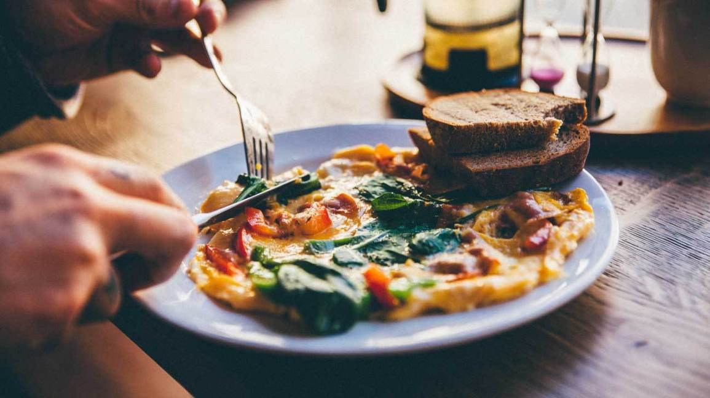
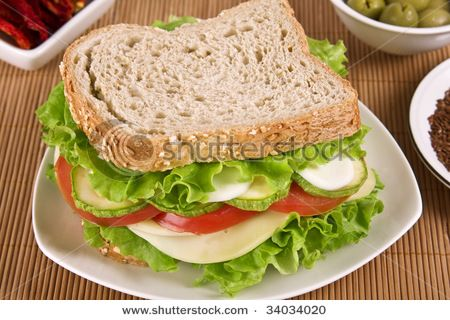
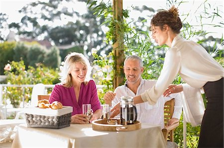
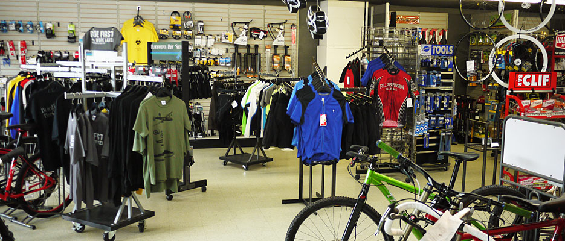

Scooter's Trail Stop

Concept
Scooter's Trail Stop is patterned after the european model of cyclo-café. Where both a bike shop and café exist in one location. There are now a few examples of this in the US, like Naples Cyclery in Naples Florida .
Scooter's Trail Stop is different in that is connected to a 'Rail Trail'. Specifically, the Legacy Trail in Venice Florida. This makes Scooter's Trail Stop convenient for users of the rail trail to partronize Scooter's Trail Stop both from the street access or from the trail by bike, running or walking. This will make Scooter's Trail Stop only bike shop and/or café in Sarasota County to have a bike shop on a trail head.
Scooters Café
Scooter's Café serves custom blended 'French Pressed Coffee' along with ovo-vegetarian breakfast and lunch items.
French Pressed Coffee
A wait person will serve your choice of dark, medium, or regular coffee blends and press the coffee at the table. Leaving the coffee, so there is no need to ask for a refill. French Pressed coffee at coffee shop prices!
Scooter's Bike Shop
The bike shop is located within Scooter's Trail Stop . There you can find:
- Bikes for Rent and for Sale
- Bike Service Department
- Running Shoes and Hiking Boots
- Bicycle, Running and Hiking Accessories
- Casual Bicycling, Running and Hiking Attire
- Friendly Sales and Service Staff